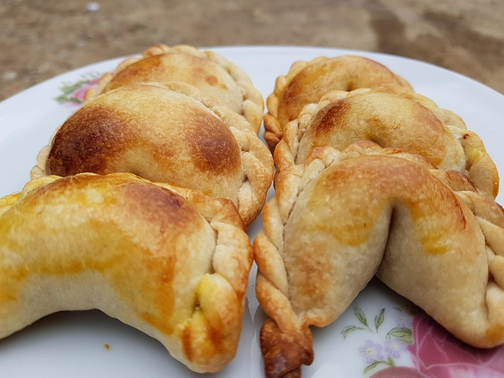
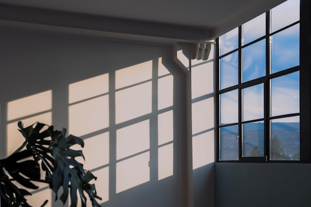
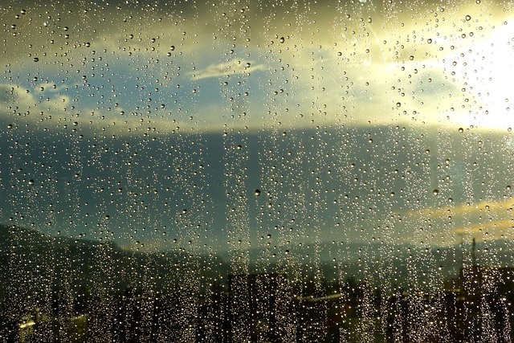
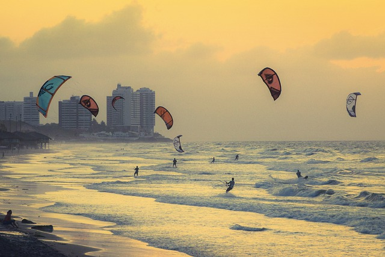
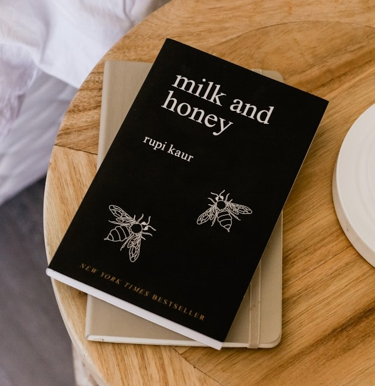
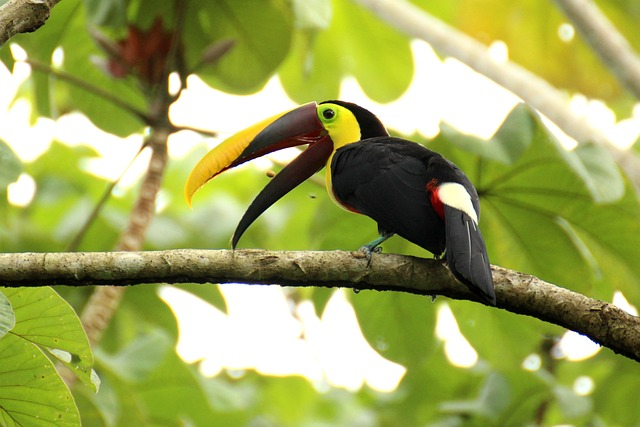
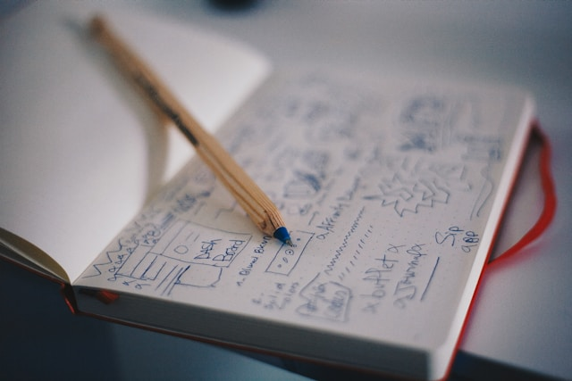

@luna.daily

Tried a new recipe. It actually turned out edible.
@benji.design
Experimenting with new layouts and interactions today. Sometimes the simplest solution is the best one.
@alexnorth

Fresh ideas, strong coffee, and a full day ahead ☕
@mariamoves
Made coffee. Forgot about it. Made another coffee.
@ellie.notes

It looked sunny five minutes ago. Now it's raining.
@theo.jpg

From my travel in January.
@madebymaya

My most recent project. Hardest one so far.
@heyoliver
Went for a quick walk and somehow ended up out for an hour.
@thejuneedit

Finished this book today. Review will come soon.
@theo.jpg

A toucan from my travels last year.
@benji.design

Working on some skethces for a new and exciting project.
No more sips!